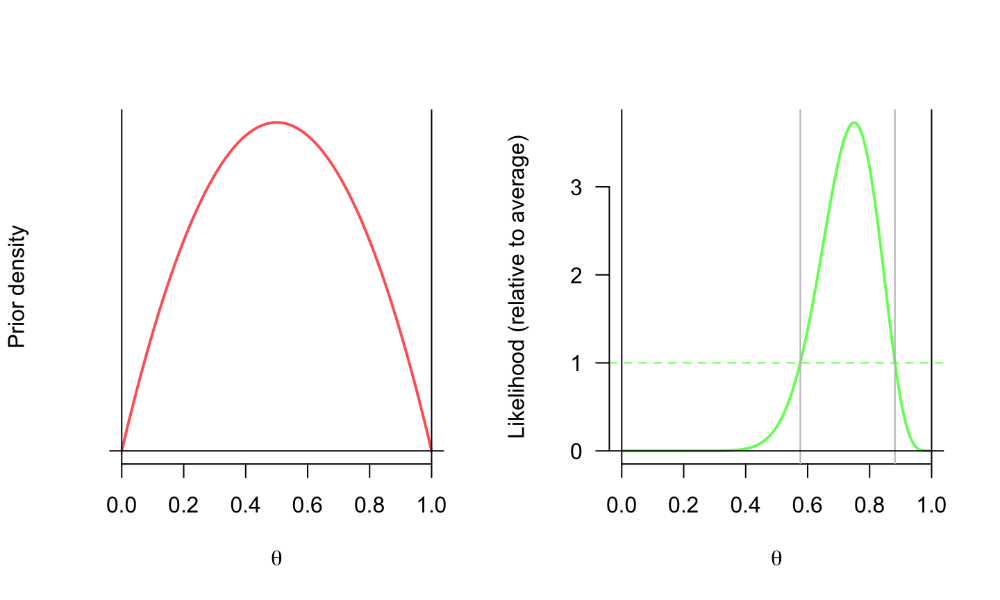
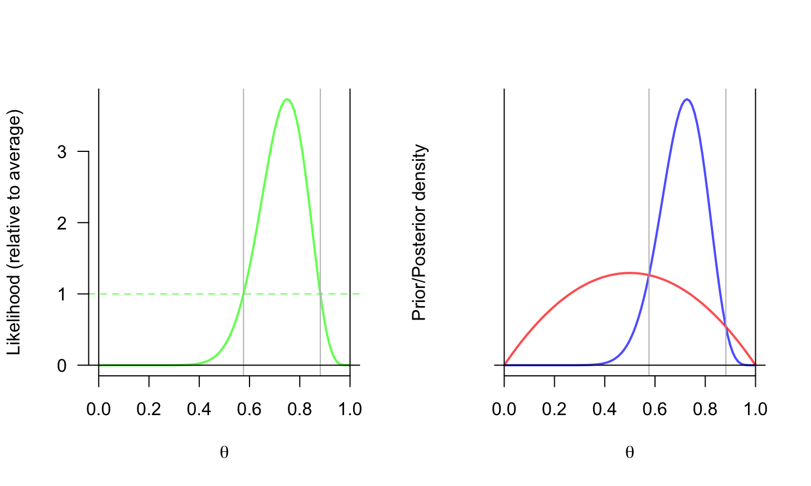
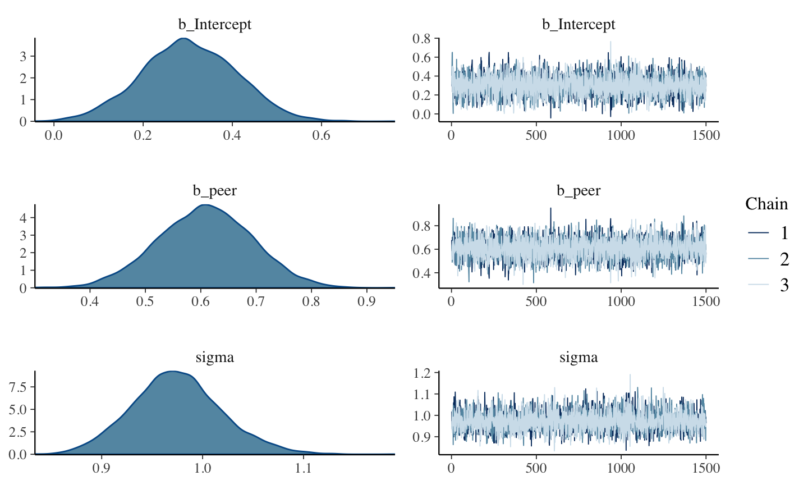
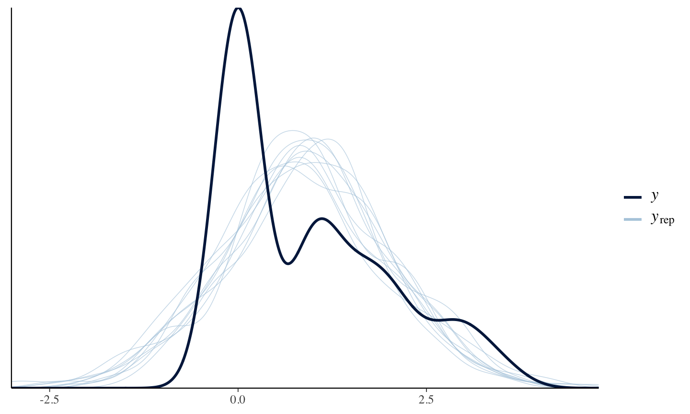
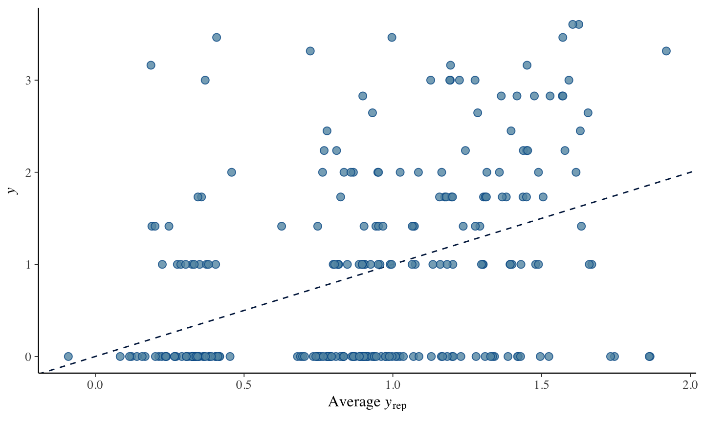

library(brms) options (mc.cores=parallel::detectCores ()) # Run on multiple cores b1 <- brm(alcuse ~ peer, data=alcohol1, chains=3, iter=3000)
## Warning in is.na(x): is.na() applied to non-(list or vector) of type 'NULL' ## Warning in is.na(x): is.na() applied to non-(list or vector) of type 'NULL' ## Warning in is.na(x): is.na() applied to non-(list or vector) of type 'NULL' ## Warning in is.na(x): is.na() applied to non-(list or vector) of type 'NULL' ## Warning in is.na(x): is.na() applied to non-(list or vector) of type 'NULL'
## Family: gaussian ## Links: mu = identity; sigma = identity ## Formula: alcuse ~ peer ## Data: alcohol1 (Number of observations: 246) ## Samples: 3 chains, each with iter = 3000; warmup = 1500; thin = 1; ## total post-warmup samples = 4500 ## ## Population-Level Effects: ## Estimate Est.Error l-95% CI u-95% CI Eff.Sample Rhat ## Intercept 0.30 0.11 0.09 0.51 4124 1.00 ## peer 0.61 0.09 0.44 0.78 4243 1.00 ## ## Family Specific Parameters: ## Estimate Est.Error l-95% CI u-95% CI Eff.Sample Rhat ## sigma 0.97 0.05 0.89 1.07 3782 1.00 ## ## Samples were drawn using sampling(NUTS). For each parameter, Eff.Sample ## is a crude measure of effective sample size, and Rhat is the potential ## scale reduction factor on split chains (at convergence, Rhat = 1).
lm.1 <- lm(alcuse ~ peer, data = alcohol1) summary(lm.1)
## ## Call: ## lm(formula = alcuse ~ peer, data = alcohol1) ## ## Residuals: ## Min 1Q Median 3Q Max ## -1.8405 -0.8472 -0.3039 0.6961 3.1602 ## ## Coefficients: ## Estimate Std. Error t value Pr(>|t|) ## (Intercept) 0.30389 0.10650 2.854 0.00469 ** ## peer 0.60739 0.08524 7.126 1.16e-11 *** ## --- ## Signif. codes: 0 '***' 0.001 '**' 0.01 '*' 0.05 '.' 0.1 ' ' 1 ## ## Residual standard error: 0.9692 on 244 degrees of freedom ## Multiple R-squared: 0.1723, Adjusted R-squared: 0.1689 ## F-statistic: 50.78 on 1 and 244 DF, p-value: 1.162e-11
plot(b1)

library(shinystan) launch_shiny(b1)
pp_check(b1, re_formula = NA, type = "dens_overlay")
## Warning in is.na(x): is.na() applied to non-(list or vector) of type 'NULL'
## Using 10 posterior samples for ppc type 'dens_overlay' by default.
## Warning in is.na(x): is.na() applied to non-(list or vector) of type 'NULL' ## Warning in is.na(x): is.na() applied to non-(list or vector) of type 'NULL' ## Warning in is.na(x): is.na() applied to non-(list or vector) of type 'NULL'

pp_check(b1, type = "scatter_avg", nsamples = 100)
## Warning in is.na(x): is.na() applied to non-(list or vector) of type 'NULL' ## Warning in is.na(x): is.na() applied to non-(list or vector) of type 'NULL' ## Warning in is.na(x): is.na() applied to non-(list or vector) of type 'NULL' ## Warning in is.na(x): is.na() applied to non-(list or vector) of type 'NULL'
